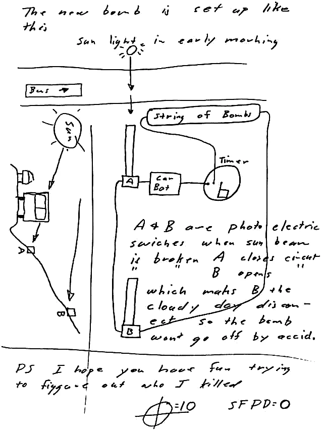
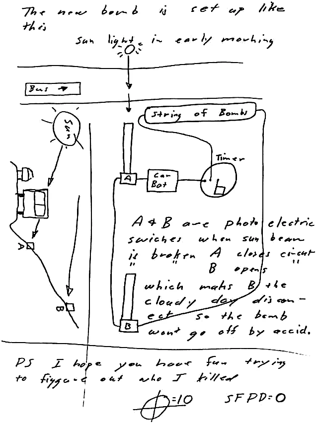

القاتل المتسلسل ريتشارد راميريز "المتعقب الليلي"
من هوه"المطارد الليلي" القاتل المتسلسل الذي أرهب كاليفورنيا في الثمانينيات؟؟ في منتصف الثمانينيات ، قتل ريتشارد راميريز 14 شخصًا على الأقل وأصبح سيئ السمعة إلى الأبد باسم "مطارد الليل"
من هوه"المطارد الليلي" القاتل المتسلسل الذي أرهب كاليفورنيا في الثمانينيات؟؟ في منتصف الثمانينيات ، قتل ريتشارد راميريز 14 شخصًا على الأقل وأصبح سيئ السمعة إلى الأبد باسم "مطارد الليل"
ايسي ساغاوا و المعروف أيضًا ببانغ هو مجرم ياباني قام بقتل امرأة هولندية تدعى رينيه هارتيفيلت و أكل لحمها في عام 1981م حينما كان في باريس و بعد إطلاق سراحه من السجن أصبح مشهورًا في اليابان
داخل سجن كولومبي شديد الحراسة ومعزول جغرافيًا ، يوجد رجل يدعى لويس جارافيتو.يعيش منفصلاً عن السجناء الآخرين ، من أجل حمايته ، ولا يأخذ إلا الطعام والشراب الذي يقدمه له من يعرفه. يصفه حراسه بأنه مرتاح وإيجابي ومحترم. إنه يدرس ليصبح سياسيًا
يُشار إلى Zodiac Killer أيضًا باسم The Zodiac أو ببساطة كان Zodiac قاتلًا متسلسلًا غامضًا نشطًا في كاليفورنيا في أواخر الستينيات والسبعينيات. على الرغم من كونه سيئ السمعة ، إلا أنه لم يكن لديه سوى عدد مؤكد من خمسة جثث
من هوه"المطارد الليلي" القاتل المتسلسل الذي أرهب كاليفورنيا في الثمانينيات؟؟ في منتصف الثمانينيات ، قتل ريتشارد راميريز 14 شخصًا على الأقل وأصبح سيئ السمعة إلى الأبد باسم "مطارد الليل"
في 31 أغسطس 1985 ، دخل القاتل المتسلسل ريتشارد راميريز إلى متجر صغير في لوس أنجلوس. في البداية ، بدا مثل أي متسوق عادي. لكن بعد ذلك ، لاحظ وجهه على غلاف إحدى الصحف - وركض لينجو بحياته.
بحلول ذلك الوقت ، كان راميريز يعتبر بالفعل المشتبه به الرئيسي في جرائم القتل الوحشية "Night Stalker" التي أرهبت كاليفورنيا لأكثر من عام. لكن السلطات كشفت للتو عن اسمه وصورته للجمهور - أثناء عودته إلى لوس أنجلوس.
أتاح ذلك للسكان متسعًا من الوقت لحفظ ملامحه الجسدية - وتوجيهه للسلطات وهو يخرج من المتجر. كما أنه لم يمنح راميريز فرصة كبيرة للهروب. لكنه بالطبع ما زال يحاول الهروب.
وشملت المطاردة التي تلت ذلك سبع سيارات شرطة وطائرة هليكوبتر تعقب راميريز في جميع أنحاء المدينة. لكن حشدًا غاضبًا من المارة أدركوه أولاً. غضبوا من جرائمه الشنيعة ، وبدأوا في ضربه بلا هوادة - واستخدم رجل واحد على الأقل أنبوبًا معدنيًا. بحلول الوقت الذي وصلت فيه الشرطة ، كان راميريز يشكرهم عمليًا على اعتقاله.
بدأ ريتشارد راميريز ، الذي أطلق عليه الإعلام المحلي لقب Night Stalker ، موجة القتل الوحشية قبل أكثر من عام بقليل من اعتقاله. في ذلك الوقت ، قتل ما لا يقل عن 14 شخصًا - وارتكب عددًا لا يحصى من أعمال العنف الأخرى. لكن حياته الإجرامية بدأت قبل ذلك بوقت طويل.
ريتشارد راميريز أدين بـ 13 تهمة قتل وخمس محاولات قتل و 11 اعتداء جنسي و 14 عملية سطو. بعد عقود ، تم ربطه بجريمة اغتصاب وقتل - لفتاة تبلغ من العمر 9 سنوات.
ولد ريتشارد راميريز في 29 فبراير 1960 ونشأ في إل باسو بولاية تكساس. ادعى راميريز أن والده اعتدى عليه جسديًا وأنه أصيب بعدة إصابات في الرأس في سن مبكرة. وكانت إحدى الإصابات شديدة لدرجة أنها سببت له ، حسبما ورد ، نوبات صرع.
للهروب من والده العنيف ، قضى راميريز الكثير من الوقت مع ابن عمه الأكبر ، ميغيل ، الذي كان من قدامى المحاربين في فيتنام. لسوء الحظ ، لم يكن تأثير ميغيل أفضل بكثير مما كان عليه تأثير والده.
خلال الفترة التي قضاها في فيتنام ، اغتصب ميغيل وعذب وحتى قطع أوصال العديد من النساء الفيتناميات. والمثير للاشمئزاز ، أن لديه الأدلة الفوتوغرافية لإثبات ذلك. غالبًا ما كان يعرض صور "ليتشي الصغيرة" للفظائع التي ألحقها بالنساء.
وعندما كان راميريز يبلغ من العمر 13 عامًا فقط ، شهد ابن عمه وهو يطلق النار على زوجته. بعد وقت قصير من إطلاق النار ، بدأ راميريز في التحول من فتى خائف ومعتدى عليه إلى شاب صلب متجهم.

بعد إلقاء القبض عليه ، غالبًا ما كان ريتشارد راميريز يتباهى علنًا بشيطنته.
من تطوير الاهتمام بالشيطانية إلى الإدمان على المخدرات ، اتخذت حياة راميريز منعطفًا مظلمًا. والأسوأ من ذلك ، أنه كان لا يزال تحت تأثير ابن عمه - حيث تم العثور على ميغيل غير مذنب بارتكاب جريمة القتل بسبب الجنون. (قضى ميغيل في النهاية أربع سنوات فقط في مستشفى للأمراض العقلية حتى تم إطلاق سراحه).
قبل مضي وقت طويل ، طور راميريز هوسًا بنفس أنواع العنف الجنسي والجسدي الذي تسبب فيه ميغيل على النساء في صوره. بدأ راميريز أيضًا في إجراء المزيد من الخلافات مع القانون - خاصة بعد انتقاله إلى منطقة لوس أنجلوس في كاليفورنيا.
على الرغم من أن معظم جرائمه المبكرة في أواخر السبعينيات وأوائل الثمانينيات كانت مرتبطة بالسرقة وحيازة المخدرات ، إلا أنها ستكون مسألة وقت فقط قبل أن تتصاعد إلى عنف لا يوصف.
لفترة طويلة ، يُعتقد أن جريمة قتل راميريز الأولى حدثت في 28 يونيو 1984. وفي ذلك الوقت قتل جيني فينشو البالغة من العمر 79 عامًا. لم يكتف راميريز بالطعن والاعتداء الجنسي على ضحيته ، بل قام أيضًا بقطع حلقها بشدة لدرجة أنها كانت على وشك قطع رأسها.
ولكن بعد عقود من اعتقال راميريز في عام 1985 ، تم ربطه أيضًا بأدلة الحمض النووي لمقتل فتاة تبلغ من العمر 9 سنوات ، والتي حدثت في 10 أبريل 1984 - قبل أشهر من مقتل فينكوف. لذلك ربما يكون هذا هو أول عملية قتل له - ما لم يكن هناك المزيد مما حدث قبل ذلك.
بعد مقتل فينشو ، مرت عدة أشهر قبل أن يضرب ريتشارد راميريز مرة أخرى. ولكن عندما فعل ذلك ، تابع دوافعه الفاسدة بتفانٍ رهيب.
في 17 مارس 1985 ، بدأت موجة اغتيال راميريز بشكل جدي بالهجوم على ماريا هيرنانديز في منزلها. على الرغم من أن هيرنانديز تمكنت من الفرار ، إلا أن رفيقتها في السكن دايل أوكازاكي لم تكن محظوظة جدًا. في ذلك المساء ، أصبح أوكازاكي أحد ضحايا مقتل راميريز.
لكن راميريز لم ينته بعد. في وقت لاحق من نفس الليلة ، أطلق النار وقتل ضحية أخرى تدعى تساي ليان يو.
بعد أكثر من أسبوع بقليل ، قتل راميريز فينسينت زازارا البالغ من العمر 64 عامًا وزوجته ماكسين البالغة من العمر 44 عامًا. بشكل مقزز ، بدأ راميريز في تأسيس أسلوب هجومه المميز: أطلق النار على الزوج وقتله ، ثم اعتدى على الزوجة وطعنها. لكن قتله لماكسين كان مروعا بشكل خاص - لأنه اقتلع عينيها.
لأشهر ، استمر راميريز في مطاردة وقتل المزيد من الضحايا في كاليفورنيا - مما أثار الخوف في قلوب الناس في جميع أنحاء الولاية.
ملصق الشرطة للمطارد الليلي.
من أكثر الأشياء المرعبة في راميريز أنه كان على استعداد لقتل أي شخص عبر طريقه. على عكس بعض القتلة المتسلسلين الآخرين الذين لديهم "نوع" ، قتل ريتشارد راميريز الرجال والنساء على حد سواء واستغل الضحايا الصغار والكبار على حد سواء.
في البداية ، بدا أن راميريز كان يهاجم فقط الأشخاص بالقرب من لوس أنجلوس ، لكنه سرعان ما أودى بحياة اثنين من الضحايا بالقرب من سان فرانسيسكو أيضًا. ومنذ أن أطلقت عليه الصحافة لقب "Night Stalker" ، كان من الواضح أن معظم جرائمه حدثت في الليل - مما أضاف عنصرًا مخيفًا آخر.
المثير للقلق أن العديد من هجماته تضمنت عنصرًا شيطانيًا أيضًا. في بعض الحالات ، كان راميريز ينقش خماسية في أجساد ضحاياه. وفي حالات أخرى ، كان يجبر الضحايا على أن يقسموا على حبهم للشيطان.
في جميع أنحاء كاليفورنيا ، ذهب الناس إلى الفراش خوفًا من اقتحام Night Stalker منازلهم أثناء نومهم - وأداء طقوس لا توصف من الاغتصاب والتعذيب والقتل. نظرًا لأنه هاجم بشكل عشوائي على ما يبدو ، بدا حقًا أنه لا يوجد أحد في مأمن.
زادت شرطة لوس أنجلوس من وجودها في الشارع وأنشأت فرقة عمل خاصة فقط للعثور عليه - بمساعدة مكتب التحقيقات الفيدرالي. في هذه الأثناء ، كان القلق العام شديدًا في هذا الوقت تقريبًا لدرجة أنه كان هناك ارتفاع ملحوظ في مبيعات الأسلحة ، ومنشآت القفل ، وأجهزة الإنذار ضد السرقة ، والكلاب الهجومية.
ولكن في النهاية ، كانت أخطاء ريتشارد راميريز في أغسطس 1985 هي التي أدت إلى القبض عليه. بعد أن شوهد خارج منزل أحد الشهود ، ترك وراءه بصمة بالخطأ - وترك سيارته ولوحة ترخيصه في مرأى من الجميع.
عندما تعقبت الشرطة السيارة ، تمكنوا من العثور على ما يكفي من بصمة الإصبع لإجراء تطابق. بحلول تلك المرحلة ، كانوا قد تلقوا بالفعل نصائح تفيد بأن شخصًا ما يحمل الاسم الأخير راميريز متورط.
من المؤكد أن شرطة لوس أنجلوس تمكنت من التعرف على ريتشارد راميريز بفضل قاعدة بيانات الكمبيوتر الجديدة لبصمات الأصابع. وعلى الرغم من أن السجلات تضمنت فقط المجرمين الذين ولدوا بعد يناير 1960 ، فقد حدث أن ولد راميريز في فبراير 1960.
سرعان ما عثرت السلطات على صور راميريز من اعتقالاته السابقة ، وقدم أحد ضحاياه الناجين وصفًا مفصلاً كان مشابهًا تمامًا للصور. بحلول نهاية أغسطس 1985 ، قررت الشرطة الإفراج عن صورة واسم Night Stalker.
على الرغم من أنهم كانوا قلقين في البداية من أن هذا سيعطي راميريز فرصة للهروب ، اتضح أنه لم يكن على علم بدعاية جديدة له - حتى فوات الأوان.
بمحض الصدفة ، كان راميريز يسافر عائداً إلى لوس أنجلوس عندما تم نشر صورته. لذلك لم يدرك أنه تم تعقبه حتى عاد إلى المدينة - ورأى وجهه على الصحف.
على الرغم من محاولته الفرار من الشرطة - وحاول سرقة سيارة في هذه العملية - إلا أنه تم تعقبه من قبل حشد من الحراس الذين تعرفوا عليه. ضربوه حتى اقتلقت الشرطة مكانه أخيرًا.
بعد اعتقاله ، أدين راميريز بارتكاب 13 تهمة قتل. بالإضافة إلى تهم القتل ، وجدته السلطات أيضًا مسؤولاً عن ارتكاب عدة عمليات اغتصاب واعتداءات وسطو.
حكم على راميريز بالإعدام في غرفة الغاز لجرائمه - وابتسم رداً على ذلك. قال "Night Stalker" لاحقًا ، "أنا فوق الخير والشر. سأنتقم. لوسيفر يسكن فينا جميعًا. هذا هو."
احتُجز في سجن ولاية سان كوينتين لبقية حياته - لكنه لم يُقتل أبدًا. نظرًا للطبيعة المعقدة لقضيته - التي تضمنت سجل محاكمة من 50000 صفحة - لم تتمكن المحكمة العليا للولاية من الاستماع إلى استئنافه حتى عام 2006. وعلى الرغم من أن المحكمة رفضت ادعاءاته ، فإن طلبات الاستئناف الإضافية كانت ستتخذ عدة طلبات أخرى أعوام.
خلال هذا التأخير الطويل ، التقى ريتشارد راميريز بمعجبة تدعى دورين ليوي والتي كانت قد أبرمت معه مراسلات. وفي عام 1996 تزوجها وهو محكوم عليه بالإعدام.
قال ليوي بعد عام واحد: "إنه لطيف ، إنه مضحك ، إنه ساحر". "أعتقد أنه شخص رائع حقًا. انه صديقي المفضل؛ إنه صديقي ".
من الواضح أن معظم الناس لم يشاركوها مشاعرها. بالنسبة لعدد لا يحصى من سكان كاليفورنيا الذين عاشوا في رعب خلال منتصف الثمانينيات ، كان راميريز أفضل قليلاً من الشيطان الذي كان يعبد.
"إنه مجرد شر. قال بيتر زازارا ، نجل الضحية فينسينت زازارا ، في عام 2006 ، إنه مجرد شر خالص. "لا أعرف لماذا قد يرغب شخص ما في القيام بشيء من هذا القبيل. للاستمتاع بالطريقة التي حدث بها ذلك ".
في النهاية ، توفي ريتشارد راميريز بسبب مضاعفات سرطان الغدد الليمفاوية للخلايا البائية ، وهو سرطان يصيب الجهاز اللمفاوي ، في عام 2013. وكان يبلغ من العمر 53 عامًا.
بينما كان على قيد الحياة ، لم يعرب راميريز عن ندمه على أي من جرائمه. في الواقع ، غالبًا ما بدا أنه يسعد بعياره.
قال بعد فترة وجيزة من حصوله على حكم الإعدام: "مرحبًا ، صفقة كبيرة". "الموت يأتي دائما مع الأرض. سأراك في ديزني لاند ".
Issei Sagawa (佐川 一 政 Sagawa Issei ، من مواليد 11 يونيو 1949) هو رجل ياباني قتل عام 1981 وأكل امرأة هولندية تدعى رينيه هارتفلت. بعد إطلاق سراحه ، أصبح من المشاهير في اليابان وكسب لقمة العيش من خلال اهتمام الجمهور بجريمته.
وقت مبكر من الحياة:
ولد ساغاوا في كوبي بمحافظة هيوغو في اليابان لأبوين ثريين. التحق بالكلية في جامعة باريس.
مقتل هارتفلت:
قضى ساغاوا فترة في السجن الفرنسي بتهمة قتل الطالبة الهولندية رينيه هارتفلت ، زميلة الدراسة في أكاديمية السوربون في باريس ، فرنسا. في 11 يونيو 1981 ، دعا ساغاوا ، طالب الأدب الفرنسي البالغ من العمر 32 عامًا ، هارتفلت لتناول العشاء في شقته في 10 شارع إرلانجر بحجة المحادثة الأدبية.
ولدى وصولها أطلق عليها النار في رقبتها ببندقية بينما كانت تجلس وظهرها أمامه على مكتب ، ثم بدأ بتنفيذ خطته لأكلها. تم اختيارها بسبب صحتها وجمالها ، تلك الخصائص التي يعتقد سقاوة أنه يفتقر إليها. يصف ساغاوا نفسه بأنه "رجل ضعيف وقبيح وصغير الحجم" (يبلغ ارتفاعه أقل من 5 أقدام (1.52 م)) ويدعي أنه يريد "امتصاص طاقتها".
قال ساغاوا إنه أغمي عليه بعد صدمة إطلاق النار عليها ، لكنه استيقظ مدركًا أنه يتعين عليه تنفيذ رغبته في أكلها. لقد فعل ذلك ، بدءًا من وركها ورجليها ، بعد ممارسة الجنس مع الجثة. في المقابلات ، أشار إلى دهشته من الطبيعة "الملونة بالذرة" للدهن البشري. لمدة يومين ، أكلت سقاوة أجزاء مختلفة من جسدها.
ووصف اللحم بأنه "طري" و "عديم الرائحة" مثل التونة. ثم حاول إلقاء الجثة المشوهة في بحيرة نائية ، لكن شوهد متلبسا بالجرم ثم ألقت الشرطة الفرنسية القبض عليه.
قدم والده الثري محاميًا كبيرًا للدفاع عنه ، وبعد احتجازه لمدة عامين دون محاكمة ، وجده القاضي الفرنسي جان لويس بروغيير "من الواضح" أنه مجنون قانونًا وغير لائق للمحاكمة وأمر باحتجاز ساجاوا إلى أجل غير مسمى في مؤسسة عقلية . بعد زيارة المؤلف Inuhiko Yomota ، نُشر تقرير Sagawa عن جريمة القتل في اليابان بعنوان In the Fog.
من المحتمل أن تكون الدعاية اللاحقة والشهرة المروعة لساجاوا قد أسهمت في قرار السلطات الفرنسية بتسليمه إلى اليابان. عند وصوله إلى اليابان ، نُقل على الفور إلى مستشفى ماتسوزاوا ، حيث وجده جميع علماء النفس أثناء فحصه أنه عاقل ولكنه "شرير".
ومع ذلك ، وجدت السلطات اليابانية أنه من المستحيل قانونًا احتجازه ، بدعوى أنها تفتقر إلى بعض الأوراق المهمة من المحكمة الفرنسية. نتيجة لذلك ، قام ساجاوا بفحص نفسه من المصحة العقلية في 12 أغسطس 1986 ، وأصبح رجلاً حراً منذ ذلك الحين.
الافراج عن بعد:
يعيش ساغاوا الآن في طوكيو وهو من المشاهير في اليابان. غالبًا ما تتم دعوته كمتحدث ضيف ومعلق. كما كتب أيضًا تقييمات مطعم للمجلة اليابانية Spa. في عام 1992 ، ظهر في فيلم استغلال هيساياسو ساتو Uwakizuma: Chijokuzeme (الزوجة الخائنة: التعذيب المخزي) كمتلصص حزين جنسيًا.
بقلم كاثرين رامسلاند
كان رجلاً قصير القامة ، طوله أقل من خمسة أقدام بقليل. كانت يداه وقدميه صغيرتين وحتى صوته كان أشبه بصوت الفتاة. لقد ذكر في بعض المقابلات أنه لم يكن ذلك النوع من الرجال الذي قد تجده معظم النساء جذابًا ، وتوقع أن كونه شديد الوعي بأوجه قصوره قد يغذي هوسه بـ "المرأة المثالية".
في كتاب Cannibal Killers ، تصف Moira Martingale كيف استحوذ Issei Sagawa ، الطالب الياباني اللامع ، على النساء طويلات القامة بملامح أوكسيدنتال. في النهاية لم يكن الخيال كافياً ، لذلك أثناء دراسته للحصول على شهادته في الأدب الإنجليزي في جامعة واكو في طوكيو ، انجذب إلى امرأة ألمانية كانت تعلمه اللغة.
وقال لاحقًا للمراسل البريطاني بيتر ماكجيل: "عندما التقيت بهذه المرأة في الشارع ، تساءلت عما إذا كان بإمكاني أكلها".
في أحد أيام الصيف ، زحف عبر نافذة شقتها ، عازمًا على قتلها. كان من دواعي سروره أنها كانت نائمة. والأفضل من ذلك أنها لم تكن ترتدي أي شيء على الإطلاق. بحث عن شيء يستخدمه لطردها أو طعنها ورأى مظلة. ومع ذلك ، قبل أن يتمكن من فعل أي شيء ، استيقظت المرأة ورأته هناك. صرخت وأخافته وهرب من شقتها.
لكنه لم ينس أكثر ما رغب فيه. كان من السهل جدًا الاقتراب من امرأة ، وإذا أعد نفسه بشكل أفضل ، فقد شعر بالثقة في أنه يمكن أن ينغمس في خياله. كان عليه فقط أن يخطط بشكل أكثر فاعلية ، لذلك بدأ في البحث عن ضحيته التالية - ضحيته التي لن تفلت من العقاب. لم يكن حتى ذهب إلى باريس بعد بضع سنوات حتى وجد المرأة التي لم يستطع التخلص منها. جلدها الأبيض ، وشكل أردافها الممتلئ ، وملامحها الجميلة صُدمت وجذبه. بدأ يتسلل إلى حياتها.
اعتقد ساجاوا أنه يحب هؤلاء النساء وأنه يمكنه إثبات ذلك من خلال التهامهن. لم يسمع به من قبل.
أثناء الدراسة في معهد Censier في باريس عام 1981 ، رصدت ساجاوا امرأة أخرى طويلة وجميلة من شمال أوروبا ، هي رينيه هارتفلت. يقول إنه عندما جلس بجانبها في الفصل ، وقع في الحب على الفور ولم يستطع التوقف عن التفكير في بشرة ذراعيها البيضاء. كانت المرأة المثالية لما أراد أن يفعله ، لكن هذه المرة كان عليه أن يكون أكثر حرصًا. كان يجب أن يكون جاهزًا.
كانت رينيه تبلغ من العمر 25 عامًا ، شقراء ومستقلة. تحدثت ثلاث لغات وكان لها مستقبل مشرق ، بهدف الحصول على الدكتوراه. في الأدب الفرنسي. طلب منها ساغاوا أن تعلمه اللغة الألمانية ، وبما أن والده كان ثريًا جدًا ، كان بإمكانه أن يدفع لها جيدًا. قبلت.
ووفقا له ، فقد أحببت ذكائه الواضح وقدرته على مناقشة كل شيء من اللوحات الانطباعية إلى شكسبير إلى الأدب الأوروبي. كتب لها رسائل الحب ودعاها لحضور الحفلات والمعارض. كان صغيرًا ، وأنثويًا ، وكان يعرج ، لكنها غالبًا ما كانت تذهب معه وتدعته إلى شقتها لتناول الشاي. حتى أنهم رقصوا معًا ، مما أتاح لساغاوا إحساسًا جسديًا أكثر بتخيلاته. لقد وجد هؤلاء النساء الاسكندنافيين متسلطين ، وحتى عندما ادعى أنه يحبهم ، فقد أراد امتلاكها وتدميرها.
ذات يوم دعا رينيه إلى شقته لتناول العشاء. طلب منها أن تقرأ قصيدة كتبها المعبّر الألماني المفضل لديه ، ففعلت ذلك. بعد أن غادرت ، شم ولعق المكان الذي جلست فيه وأقسم أنه سيأكلها - وهذا سيسمح له بامتلاكها إلى الأبد.
سرعان ما طلب منها الحضور مرة أخرى لتناول العشاء. قال إنه كان لديه مسجل كاسيت ، وكان يريد أن يسجل قراءتها للقصيدة. قبلت ليلة 11 يونيو 1981 ، واستعد ساجاوا لتمثيل خياله النهائي.
عند وصوله إلى باريس ، اشترى بندقية من عيار 22 "للحماية الذاتية". كان جاهزًا عندما وصل رينيه. جلسها على الأرض ، على الطريقة اليابانية ، لشرب الشاي. وضع في مشروبها بعض الويسكي ليجعلها أكثر مرونة. تحدثوا لفترة بينما كان ساغاوا ينتظر الويسكي ليحدث تأثيره. ثم أخبر رينيه أنه يحبها ويريد اصطحابها إلى الفراش.
قاومته. وجدته منخرطًا ولكنه ليس جذابًا جنسيًا. أرادت فقط أن تكون صديقته.
أومأ ساغاوا برأسه. ثم قام ليحصل على كتاب الشعر ، بينما جلس رينيه على كرسي. سلم ساغاوا القصيدة إلى رينيه ليقرأها وبدأ التسجيل.
بينما كانت رينيه تتلو القصيدة بلغتها الأم ، صعدت ساجاوا من خلفها ببندقيته وأطلق عليها الرصاص في مؤخرة رقبتها. لقد سقطت من على الكرسي. واصل الحديث معها لكنها فشلت في الإجابة. تفاجأ بمدى الهدوء الذي كانت عليه. ثم لاحظ كمية الدم المتدفقة من جرحها. في البداية ، حاول تنظيفه ، واستسلم أخيرًا.
ثم جردها من ملابسها ، ووجد صعوبة في إزالة الملابس من الجثة. لكنه كان مسرورًا لأنها الآن لم تعد قادرة على رفض تقدمه. هي ملك له. ثم حصل على سكين واستخدمه في قطع طرف صدرها الأيسر وقطعة من أنفها. استهلك هؤلاء.
كتب لاحقًا في روايته الخيالية In the Fog: "لقد لمست وركها ، وتساءل أين يجب أن أعض أولاً". اختار أردافها اليمنى ، لكنه وجد صعوبة في العض ، ثم أدرك أنه يعاني من صداع. ثم مضى ليصف لحظة بلحظة مظهر دهونها وعضلاتها ومذاقها.
قال ساجاوا إن الدهون تتسرب من جروح طعنة واحدة ، وكانت تشبه قوام الذرة الصفراء ومظهرها. شمها ووجد أنها لا رائحة لها. قطع أعمق ليجد الجسد ، ووضع قطعة في فمه. "[] ذاب في فمي مثل التونة النيئة في مطعم السوشي."
بالنسبة له ، لم يكن هناك شيء أكثر من ذلك ، ونظر في عيون رينيه الميتة ليخبرها بذلك. لقد كان منتشيًا الآن بعد أن انغمس في خياله. كان لديه هذا الجسد الرائع لنفسه. استغرق الأمر منه حتى سن 32 لتحقيق رغباته ، لكنه فعل ذلك.
ثم أصبح جادا. باستخدام سكين نحت كهربائي ، بدأ ساغاوا في تقطيع رينيه إلى أجزاء. وضع شرائح من اللحم لتخزينها لوقت لاحق وقضم بضع قطع نيئة. ثم أعد وجبة سريعة من لحم الإنسان المقلي مع الخردل. التقط صورا للجثة المشوهة ومارس الجنس معها. سجل "عندما أعانقها" ، قالت "إنها تتنفس". قال لها إنه يحبها.
وبينما كان يطبخ ويأكل المزيد من بقاياها ، استمع إلى التسجيل الذي سجله لها وهي تقرأ القصيدة. عندما انتهى ، استخدم ملابسها الداخلية كمنديل لمسح فمه. ثم عاد إلى جسدها ، وقطع صدرها وخبزه ، لكنه كره القوام الدهني. وجد أنه يفضل فخذيها.
عندما شعر أخيرًا بالإرهاق ، أخذ ما تبقى من الجثة إلى سريره لينام معها. كان يعلم أنه سيتعين عليه في الصباح الاستعداد للتخلص من الأدلة.
في اليوم التالي ، وجد أن الجسد لم يشم بعد ، استمر في تجربة أجزاء منه ، ولا سيما الذراع التي فتنته بشدة. يمضغه على طول الطريق من تحت الإبط إلى الكوع. كتب: "لم يكن لدي أي فكرة ، أن طعمه سيكون جيدًا للغاية".
كان ساغاوا فضوليًا بشأن بعض أجزاء الجسم التي بدت أكثر إثارة للاشمئزاز. تردد في ما يجب فعله ، لكنه قرر المضي قدمًا والانغماس. قطع فتحة الشرج ، ووضعها في فمه ، لكن الرائحة تغلبت عليه ، لذلك بصقها. حاول قليها لكن ذلك لم ينقص الرائحة فاستسلم وعاد إلى الجسد.
انتهى شهر العسل:
بحلول هذا الوقت ، حلق العديد من الذباب الكبير حول الجثة ، لذلك اعتبر ساجاوا ذلك كعلامة على أنه فقد رينيه. لقد انتهى "شهر العسل".
ثم استخدم بلطة لتقطيعها إلى قطع تتناسب مع الحقائب التي اشتراها خصيصًا لهذا الغرض. ومع ذلك ، حتى عندما قطع أوصالها ، أصبح متحمسًا ، لذلك استخدم يدها لممارسة العادة السرية. ثم يمضغ أنفها وسمع ضجيج غضروف الغضروف. نظرًا لأنه غالبًا ما كان يفكر في مضغ شفتها ، أزالها ووضعها جانبًا. هذا الجزء سيحتفظ به للمتعة اللاحقة.
قال في روايته الخيالية: "أريد لسانها". "لا يمكنني فتح فكها السفلي ، لكن يمكنني الوصول بين أسنانها. أخيرًا يخرج." قطعها ووضعها في فمه وشاهد نفسه وهو يمضغها في المرآة. ثم ذهب للعيون.
كانت الخطوة الأخيرة لساجاوا هي استكشاف الأعضاء الداخلية التي لسعت يديه بحمض الجهاز الهضمي ، ثم استخدم الأحقاد لقطع رأسها. مع إزالة العديد من الأجزاء ، بدت وكأنها جمجمة. أمسك بشعره وعلق رأسه أمامه ، وهي تجربة دفعته إلى الوراء ليقول ، "أدركت أنني آكل لحوم البشر".
بحلول الوقت الذي انتهى فيه من تعبئة القطع ووضعها في حقيبة ، كان منتصف ليل اليوم الثاني. دعا سيارة أجرة.
عند وصوله إلى Bois de Boulogne ، سحب الحقائب إلى الحديقة ، قصد دفعها في البركة. ومع ذلك ، فقد واجه وقتًا عصيبًا مع عبئه الثقيل. عندما رأى بعض الناس يراقبونه ، خاف وترك الحقائب. أفاد مارتينجال في كتاب آكلي لحوم البشر أن زوجين اقتربا من بعضهما ورأيا يد أنثى بارزة من إحدى الحالات الملطخة بالدماء ، لذلك اتصلوا بالشرطة. فتحت الشرطة الحقائب ، وعثرت على الرفات ، وبدأت مهمة تعقب الحقائب وإعادتها إلى المشتري.
في غضون ذلك ، عاد ساغاوا إلى شقته للاستمتاع بقطع رينيه هارتفلت التي وضعها في الثلاجة. بينما كان يأكل وجبة شنيعة أخرى ، قام ببعض المواد الإباحية. في كل يوم بقي فيه حريته ، كان يأكل قطعة أخرى ، مدعيًا في عمليات الترحيل السري التي قام بها لاحقًا أنها أصبحت أحلى مع مرور الوقت.
داخل سجن كولومبي شديد الحراسة ومعزول جغرافيًا ، يوجد رجل يدعى لويس جارافيتو.يعيش منفصلاً عن السجناء الآخرين ، من أجل حمايته ، ولا يأخذ إلا الطعام والشراب الذي يقدمه له من يعرفه. يصفه حراسه بأنه مرتاح وإيجابي ومحترم. إنه يدرس ليصبح سياسيًا ، وعند إطلاق سراحه يأمل في بدء مهنة في النشاط ، لمساعدة الأطفال الذين تعرضوا للإساءة.
بعد كل شيء ، الأطفال الذين يتعرضون للإساءة هم شيء خبير فيه ، حيث أساء إلى أكثر من 300 منهم بنفسه.
قبل أن يُعرف غارافيتو بالسجين المريح والاحترام الذي يعجب به حراس السجن الكولومبيون ، كان يُعرف باسم 'لا بيستيا' ، أو الوحش. من عام 1992 إلى عام 1999 ، اغتصب الوحش وعذب وقتل في أي مكان من 100 إلى 400 فتى ، تتراوح أعمارهم بين ستة أعوام و 16 عامًا. ويبلغ العدد الرسمي لضحاياه 138 ، وهو الرقم الذي اعترف به في المحكمة.
وتعتقد الشرطة أن الرقم أقرب إلى 400 وما زالت مستمرة حتى يومنا هذا لإثبات ذلك.
في عام 1992 ، كانت كولومبيا في منتصف حرب أهلية استمرت عقودًا بدأت في أواخر الستينيات وتركت الآلاف من السكان الكولومبيين بلا مأوى ، ويدافعون عن أنفسهم في الشوارع.
كان العديد من الذين تُركوا بلا مأوى من الأطفال ، إما أن آباؤهم ماتوا أو ماتوا منذ زمن بعيد ، مما يضمن ألا يلاحظ أحد ما إذا بدأوا في الاختفاء ويجعلهم أهدافًا سهلة.
ادرك لويس جارافيتو ذلك وسيستخدمه لصالحه خلال السنوات السبع المقبلة.
على الرغم من عدم وجود سبب لذلك ، إلا أن جارافيتو كان حذرًا بشأن جرائمه. لقد استهدف على وجه التحديد الأولاد المضطهدين والمشردين والأيتام الذين جابوا الشوارع بحثًا عن الطعام أو الاهتمام. بمجرد أن يجد واحدة ، كان يقترب منه ، ويجذبهم بعيدًا عن شوارع المدينة المزدحمة ، ويعد الأولاد الأصغر سنًا بالهدايا أو الحلوى ، والأولاد الأكبر سنًا بالمال أو العمل.
كان يرتدي الجزء عند عرض وظيفة ، أو ينتحل شخصية كاهن أو مزارع أو رجل مسن أو بائع متجول ، يبحث عن شخص شاب للمساعدة في منزله أو عمله. كان يقوم بتناوب تنكراته كثيرًا ، ولا يظهر أبدًا بنفس الشخص كثيرًا لتجنب الشك.
بمجرد أن يجذب الصبي بعيدًا ، كان يسير معه لفترة من الوقت ، ويشجع الصبي على مشاركة جارافيتو في حياته لكسب ثقته. في الواقع ، كان يرتدي الأولاد ، ويمشي لفترة كافية حتى يتعبوا ، مما يجعلهم ضعفاء وغير حذرون ثم يهاجم. كان يحاصر الصبي المتعب ، وربط معصميه ببعضهما البعض. ثم كان يعذبهم بشكل لا يصدق
وفقًا لتقارير الشرطة ، حصل الوحش حقًا على لقبه. وظهرت على جثث الضحايا التي تم العثور عليها آثار تعذيب مطول ، بما في ذلك علامات عض وإيلاج في الشرج. في حالات متعددة ، تم استئصال الأعضاء التناسلية للضحية ووضعها في فمه. تم قطع رأس العديد من الجثث.بعد خمس سنوات من مقتل لويس جارافيتو ضحيته الأولى ، بدأت الشرطة في الانتباه إلى الأطفال المفقودين.
في إحدى حقائب غارافيتو ، اكتشفت الشرطة صوراً للأولاد الصغار ، ومداخل يومية مفصلة وصف فيها كل جريمة من جرائمه ، وإحصاء علامات ضحاياه.أثناء تفتيش المنطقة المحيطة بالأولاد الثلاثة ، عثرت الشرطة على ملاحظة بها عنوان مكتوب بخط اليد. تبين أن العنوان هو صديقته جارافيتو ، التي كان يواعدها منذ سنوات. على الرغم من أنه لم يكن في المنزل في ذلك الوقت ، إلا أن أغراضه كانت كذلك ، وأعطت صديقته الشرطة الوصول إليها..
استمر البحث عن جارافيتو لعدة أيام ، تم خلالها تفتيش مساكنه المعروفة ، وكذلك في المناطق المحلية التي كان معروفاً أنه يتسكع فيها للبحث عن ضحايا جدد. لسوء الحظ ، لم تظهر أي من جهود البحث أي معلومات عن مكان وجود جارافيتوس. أي حتى 22 أبريل.بعد أسبوع تقريبًا من بدء مطاردة جارافيتو ، ألقت الشرطة في بلدة مجاورة القبض على رجل للاشتباه في ارتكابه جريمة اغتصاب. لاحظ رجل بلا مأوى ، جالسًا في زقاق ، أن رجلًا كبير السن يلاحق صبيًا صغيرًا ويقابله في النهاية. اعتقادا منه أن الموقف كان مأساويا بما يكفي للتدخل ، أنقذ الرجل المتشرد الصبي وأبلغ السلطات.
ألقت الشرطة القبض على الرجل للاشتباه في محاولته الاغتصاب وحجزت له.
دون علمهم ، كان في عهدتهم رجل مذنب بارتكاب أكثر بكثير من مجرد محاولة الاغتصاب. في عملية اعتقال شبه عرضية ، ألقت الشرطة المحلية القبض على الوحش الذي كان الجميع يبحث عنه ، لويس جارافيتو.بمجرد استجوابه من قبل الشرطة الوطنية الكولومبية ، تصدع جارافيتو تحت الضغط. اعترف بإساءة معاملة 147 صبيا ودفن جثثهم في قبور لا تحمل علامات. حتى أنه رسم خرائط لمواقع المقابر للشرطة.
تم تأكيد قصصه عندما عثرت الشرطة على زوج من النظارات في أحد مسرح الجريمة والتي تتطابق مع حالة Garavito المحددة للغاية. في النهاية ، أدين بـ 138 تهمة قتل ، على الرغم من استمرار التحقيق مع الآخرين.
العقوبة القصوى للقتل في كولومبيا هي حوالي 13 عامًا. مضروبًا في 138 تهمًا حصل عليها ، وصل حكم لويس جارافيتو إلى 1853 عامًا وتسعة أيام. ينص القانون الكولومبي على أن الأشخاص الذين ارتكبوا جرائم ضد الأطفال مطالبون بقضاء 60 عامًا على الأقل في السجن.
ومع ذلك ، نظرًا لأنه ساعد الشرطة في العثور على جثث الضحية ، فقد تم منحه 22 جثة ومن المقرر إطلاق سراحه في عام 2021.
أحدث صوره له في السجن
يُشار إلى Zodiac Killer أيضًا باسم The Zodiac أو ببساطة كان Zodiac قاتلًا متسلسلًا غامضًا نشطًا في كاليفورنيا في أواخر الستينيات والسبعينيات. على الرغم من كونه سيئ السمعة ، إلا أنه لم يكن لديه سوى عدد مؤكد من خمسة جثث ، على الرغم من أنه يشتبه في ارتكاب ما يصل إلى سبعة وثلاثين جريمة قتل في المجموع.
الهجمات الأولى والرسائل
وقعت أول جرائم قتل زودياك مؤكدة في 20 ديسمبر 1968 ، على طريق بحيرة هيرمان في كاليفورنيا. والضحايا هم ديفيد آرثر فاراداي ، 17 عامًا ، وبيتي لو جنسن ، 16 عامًا ، وكلاهما تم إطلاق النار عليهما بمسدس 22. ثم ظل زودياك غير نشط حتى 4 يوليو من العام التالي ، عندما أطلق النار على زوجين آخرين ، مايكل ماجو ، 19 عامًا ، ودارلين فيرين ، 22 عامًا ، بينما كانا جالسين في سيارة متوقفة في ساحة انتظار حديقة بلو روك سبرينجز في فاليجو. نجا ماجو ، على الرغم من إصابته بجروح خطيرة ، وتمكن من تقديم وصف. في الأول من أغسطس ، تلقى Vallejo Times-Chronicle و San Francisco Examiner و San Francisco Chronicle رسائل شبه متطابقة من Zodiac حيث حصل على الفضل في جرائم القتل ، مما يثبت ذنبه من خلال ذكر عدة حقائق حول مسرح الجريمة ، مثل ماذا كان يرتدي الضحايا وكيف تم وضع أجسادهم ونوع الذخيرة التي استخدمها. كان التوقيع الوحيد هو رمز "زودياك". احتوت الرسائل أيضًا على جزء واحد من تشفير مكون من ثلاثة أجزاء صممه Zodiac ، الذي أمر جميع الأوراق الثلاثة بنشر الأصفار على صفحاتهم الأولى وهددوا بالذهاب في فورة قتل خلال عطلة نهاية الأسبوع إذا لم يمتثلوا. نشرت جميع الأوراق الثلاثة الشفرة ، والتي تم تصدعها بعد أكثر من أسبوع بقليل من قبل المعلمين دونالد وبيتي هاردن. في الرسالة التي تم فك شفرتها ، ادعى زودياك أنه كان يقتل من أجل جمع العبيد من أجل حياته الآخرة. جاءت رسالة الأبراج التالية في اليوم السابق لتصدع التشفير. في ذلك ، أطلق "زودياك" على نفسه لأول مرة وقدم مزيدًا من التفاصيل حول جرائم القتل.
ووقعت جريمة القتل التالية بالقرب من بحيرة بيريسا في 27 سبتمبر. هذه المرة ، تم تقييد وطعن الضحيتين ، بريان هارتنيل ، 20 عامًا ، وسيسيليا شيبرد ، 22 عامًا ، بدلاً من إطلاق النار عليهما. نجا هارتنيل من إصاباته ، لكن شيبرد توفي بعد يومين. خلال مقتله التالي ، ابتعد زودياك عن نمطه أكثر فأطلق النار وقتل سائق سيارة أجرة ، بول لي ستاين ، 29 عامًا ، في بريسيديو هايتس في سان فرانسيسكو في 11 أكتوبر بعد الركوب معه. هذه المرة ، تم العثور على بصمة جزئية في الدم داخل السيارة ، إلى جانب زوج من القفازات (ومع ذلك ، تم اعتباره صغيرًا جدًا بحيث لا يتناسب مع الرجل الذي وصفه الشهود. وتم ربطهم لاحقًا بإحدى مسافرات ستاين. ). في البداية ، قادت الشرطة للاعتقاد بأن القاتل كان أسودًا ، وتم تصحيح ذلك لاحقًا. قبل ذلك ، اكتشف زوجان من رجال الشرطة بالزي الرسمي وهم في طريقهم إلى مسرح الجريمة رجلاً يناسب وصف زودياك يرتدي سترة داكنة ويبتعد عن مسرح الجريمة بعد دقائق فقط من إطلاق النار. بعد ثلاثة أيام ، تلقت صحيفة سان فرانسيسكو كرونيكل رسالة هدد فيها زودياك بقتل جميع ركاب حافلة مدرسية وضمت قطعة من قميص بول ستاين الدموي. على الرغم من أن هذه كانت آخر عمليات القتل المؤكدة التي قام بها زودياك ، إلا أنه استمر في كتابة الرسائل وأعلن مسؤوليته عن العديد من جرائم القتل خلال هذا الوقت. يُعتقد عمومًا أنه كذب للفت الانتباه.
المشتبه به الرئيسي في القضية ، على الأقل في نظر الجمهور ، كان ولا يزال آرثر لي ألين. بدأت السلطات التحقيق معه بعد أن أخبرهم أحد زملائه القدامى ، دونالد تشيني ، أن ألين أخبره بفكرة كانت لديه من أجل رواية عن قاتل متسلسل أطلق على نفسه اسم "زودياك" وقام بعدة أشياء في البروج. فعل كيلر أو هدد بفعله ، مثل تسجيل مصباح يدوي على بندقيته وقتل ركاب حافلة مدرسية (على الرغم من أن هذه القصة قوبلت ببعض الشكوك في الوقت الحاضر منذ اتهام ألن بالتحرش بأحد أبناء تشيني). أيضًا ، كان ألين غواصًا جلديًا ذهب إلى بحيرة بيريسا في عدة مناسبات. كما اعترف بوجود سكاكين ملطخة بالدماء في سيارته في عطلة نهاية الأسبوع التي وقعت فيها عملية الطعن ، لكنه زعم أن الدماء جاءت من دجاجة كان قد قتلها على العشاء. بعد أن تم تأمين وتنفيذ أمر قضائي بمقطورته وكتابته اليدوية ، تمت مقارنة بصمات أصابعه بالجزء من الكابينة ، ومقارنة بنادقه بأدلة زودياك وكتابته بخط يده إلى تلك الموجودة في الحروف. لم تأت أي من الاختبارات بمباراة وتم التخلي عن Allen. في عام 1991 ، تم تعقب ماجو وعرض مجموعة من الصور القديمة للمشتبه بهم في زودياك. بعد أن ألقى أصابع الاتهام على ألن باعتباره القاتل ، كانت هناك محادثات حول اتهامه رسميًا بارتكاب جرائم القتل بناءً على أدلة ظرفية ضده (والتي بدورها اعترض عليها آخرون بشدة). توفي آلن لأسباب طبيعية قبل إجراء أي محاكمة. حتى يومنا هذا ، لا تزال القضية دون حل ولا تزال هوية القاتل "زودياك" غير معروفة.
من روايات الناجين القلائل من هجمات "زودياك" المعروفة ، يُعتقد عمومًا أن "البروج" يرتدون ملابس سوداء من أنواع مختلفة (حسب الشهر) ، وعلى الأقل في مناسبة واحدة ، ارتدوا غطاء رأس داكنًا مزينًا مع رمز زودياك.
تباينت أساليبه أيضًا ، حيث تم إرسال بعض الضحايا بواسطة مسدس آلي (من عدة أنواع) أو أسلحة ذات نصل ، وأبرزها ما كان على الأرجح سكينًا عسكريًا. ووفقًا لإحدى رسائله ، فقد تم ، أثناء عمليات القتل في عيد الميلاد ، وضع مصباح يدوي بحجم قلم رصاص على بندقيته حتى يتمكن من إطلاق النار في الظلام.
كان نمط هجوم زودياك المعتاد هو استهداف الأزواج القوقازيين المراهقين ، وضربهم عندما كانوا في منطقة منعزلة (معظمها ممرات العشاق) و / أو في سيارة وقتلهم إما بإطلاق النار عليهم أو طعنهم بسكين. من المعروف أن طريقته في الاقتراب منهم متنوعة. عندما هاجم Mageau و Ferrin ، سار للتو إلى السيارة وبدأ في إطلاق النار عليهم دون أن ينبس ببنت شفة ، بينما أثناء طعن هارتنيل شيبرد ، اقترب منهم متظاهرًا بأنه لص قبل أن يأمر شيبرد بربط هارتنيل ببعض أطوال الحبل المقطوعة مسبقًا ثم ربطها بنفسه. خلال عملية القتل الأخيرة ، ادعى أنه محكوم هارب قتل حارسًا واحتاج إلى سيارتهم وأموالهم حتى يتمكن من الفرار إلى المكسيك. عندما قتل بول ستاين ، ركب سيارته الأجرة ، وأطلق النار على رأسه بسمك 9 ملم ، وأخذ محفظته ومفاتيح السيارة وقطعة ملطخة بالدماء من قميصه ، والتي أرسلها لاحقًا إلى The Chronicle. كما أنه ، على الأرجح ، عن قصد ، تصرف في مواقع متداخلة في الاختصاصات ، كوسيلة لإبطاء السلطات. وزعم في إحدى رسائله أنه قتل بعض ضحاياه "بالنار" و "بالحبل". على الرغم من أن القضايا التي تنطوي على الخنق كانت مرتبطة بزودياك (جرائم القتل في سانتا روزا) ، إلا أنه لم يتم ربط أي حالة من حالات الحرق العمد به.
بعد هجمات فيرين-ماجو وهارتنيل-شيبرد ، اتصل بأقرب قسم للشرطة من مكان وقوع الهجمات من هاتف عمومي وأعلن مسؤوليته عن الجرائم.
وصف جون دوغلاس The Zodiac Killer في كتابه ، الحالات التي تطاردنا ، على أنه شخص نرجسي ووحيد اجتماعيًا نرجسيًا وغير لائق ووحيدًا ، وكان مدفوعًا بشكل أساسي بالحاجة إلى الاهتمام والقوة والأهم من ذلك كله ، المصداقية. لقد شعر بالحاجة إلى إثبات تفوقه الفكري ، من أجل تعويض مشاعره بالنقص والنقص. كان لدى UNSUB أيضًا قهرية واعية بذاتها ، مما يعني أنه كان مهووسًا بالآخرين الذين يستخفون به ولا يقدرون مهاراته ، ويكون مقتنعًا أيضًا بأن المجتمع ظلمه. على الأرجح ، قضى معظم حياته مع والدته ، التي كانت تربطه بها علاقة صعبة في أحسن الأحوال ، ولم يكن ناجحًا جدًا مع النساء. كان من المحتمل أن يكون لديه بعض العلاقات مع كل من ريفرسايد كوليدج (حيث قُتلت شيري جو بيتس ، أحد ضحايا زودياك المشتبه به. كان دوغلاس متأكدًا إلى حد ما من أنه ينسب هذا القتل إليه) ودير لودج ، مونتانا (موقع السجن) يُزعم أنه ذكر اسمه أثناء هجوم هارتنيل-شيبرد. ومع ذلك ، فإن صحة هذا الادعاء مشكوك فيها ، حيث أن اسم السجن استنتج فقط من قبل شرطي استجوب الناجي برايان هارتنيل).
ربما قضى بعض الوقت في الجيش ، ربما في سلاح الجو أو البحرية ، حيث تدرب على الأرجح على الرموز. إذا كان هذا هو الحال ، فسيتم تسريحه قريبًا لأسباب طبية أو بدون إبداء أسباب ، لأنه لا يستطيع قطع مثل هذه البيئة المنظمة والمنضبطة على المدى الطويل. كان يحب الأسلحة وكان على دراية بها ، وربما كان صيادًا ، ولديه خبرة فنية ، ويظهر المهارة بالأرقام والرموز. ربما كان لدى UNSUB أيضًا منطقة عمل خاصة ، حيث احتفظ بالمواد التي يحتاجها لكتاباته والتغطية الصحفية لجرائمه. ربما اشتكى ، مع أحد المقربين من نوع ما (على الأرجح شخص منعزل آخر) ، من إظهار تطبيق القانون عدم القدرة في قضية زودياك.
في رسائله ، كما هو الحال في جرائمه ، أظهر الجاني طبيعة مزدوجة: مثقف جيدًا وذكيًا للغاية ، على الرغم من أنه أمي ، ومنظم للغاية ، على الرغم من أنه ، في بعض الحالات على الأقل ، كان غير منظم (ترك الناجين وبصمات الأصابع وشاهده العديد من الأشخاص. شهود عيان بينهم اثنان من رجال الشرطة). يوفر هذا المزيج تمثيلًا مختلطًا. من الواضح أيضًا ، من اتصالاته ، أن "Zodia" c كان عرضة للتقلبات المزاجية: في بعض الأحيان كان يسخر بذكاء ، وأحيانًا يسقط من النعمة ، ويحاول تعويض عقدة الخوف والدونية لديه من خلال الكلمات الخبيثة أو التهكم الجسيم.
اعتبر دوغلاس أنه من المحتمل أنه ، نظرًا لأن زودياك كان يحاول باستمرار تطوير نفسه وطريقة عمله ، كان السبب الأكثر احتمالية لتوقفه المفاجئ هو خوفه من نفاد الحظ ، بعد أن تم رصده واستجوابه من قبل شخصين يرتديان الزي العسكري. رجال الدوريات ، بعد دقائق فقط من مقتل بول ستاين. ولا يمكن استبعاد أن "زودياك انتحر بعد انتهاء جرائم القتل.
استنتج موراي ميرون ، عالم الجريمة وزميل دوغلاس ، عند تحليل الرسالة التي أرسلها زودياك إلى ملفين بيلي في ديسمبر 1969 ، أن UNSUB كان يعاني من اكتئاب حاد ، وأنه سينتحر في النهاية. دوغلاس ، بدوره ، على الرغم من اقتناعه بأن زودياك شعر بالوحدة والاغتراب في وقت قريب من عيد الميلاد ، واتفق مع حقيقة أنه كان سينتحر يومًا ما ، فقد اعتقد أن الرسالة كانت مسرحية للتعاطف.
كانت النظرية ، التي اقترحها عالم الجريمة الأنجلو-كندي لي ميلور (مؤيد نظرية العنف التعبيري / التحويلي) ، هي أن الأبراج ، بإرسال الرسائل وترك الرسائل في مسرح الجريمة ، كان يتعامل مع عملية تفاوض بشأن الهوية. نظرًا لمشاعره بعدم الكفاءة ، لم يكن قادرًا على الحصول على هوية مقبولة وعانى من أزمة متكررة ، محاولًا إعادة تكوين هويته المجزأة تحت ستار قاتل نصب نفسه. غالبية المجرمين التعبيريين / التحوليين الذين حللهم ميلور كانوا عازبين ، مستمرين ولم يكبروا أبدًا ، ويمثلون مهنة وذكورية غير مستقرة ، وكانوا مهووسين بالثقافة البوليسية والعسكرية.
وضع عالم الجريمة دونالد لوند نظرية أن زودياك كان ساديًا جنسيًا قتل كبديل للجنس.
وصفه الناجون والشهود من هجمات البروج بأنه:
ارتفاع حوالي 5 '8 "إلى 5" 10 ".
شعر بني مجعد أو بني محمر فاتح يتم ارتداؤه في قص طاقم.
يرتدون نظارات ذات إطار قرن وعادة ما يرتدون ملابس داكنة ، وعادة ما تكون بنطلون من الصوف وسترة واقية من الرياح زرقاء داكنة أو سوداء ، مع أحذية القفز العسكرية المميزة المعروفة باسم "Wing Walkers".
متوسطة أو ممتلئة الجسم قليلا.
يصف أحد الناجين برج البروج بأنه لديه مشية غريبة ؛ أي أنه كان يمشي غريبًا أو ثقيلًا أو ثقيلًا.
تم العثور على مطبوعات التمهيد في مسرح جريمة هارتنيل شيبرد بحجم 10½.
يصف الناجي بريان هارتنيل صوت زودياك بأنه "بطيء ومقاس" وله صوت وإيقاع فريد مع نغمة رتيبة.
 
